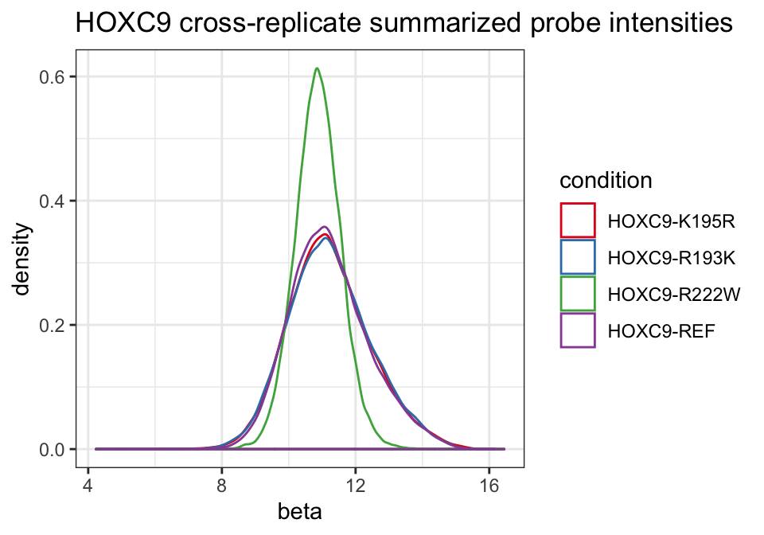
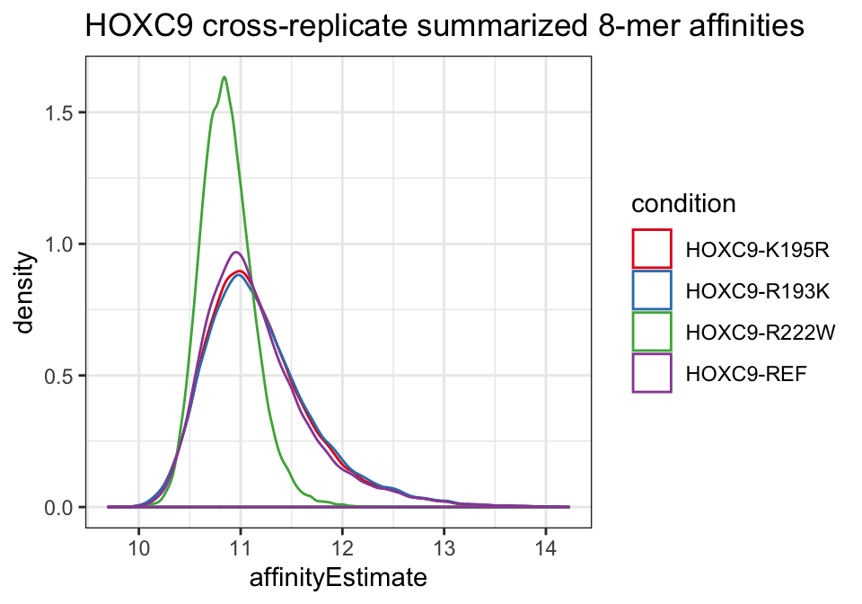
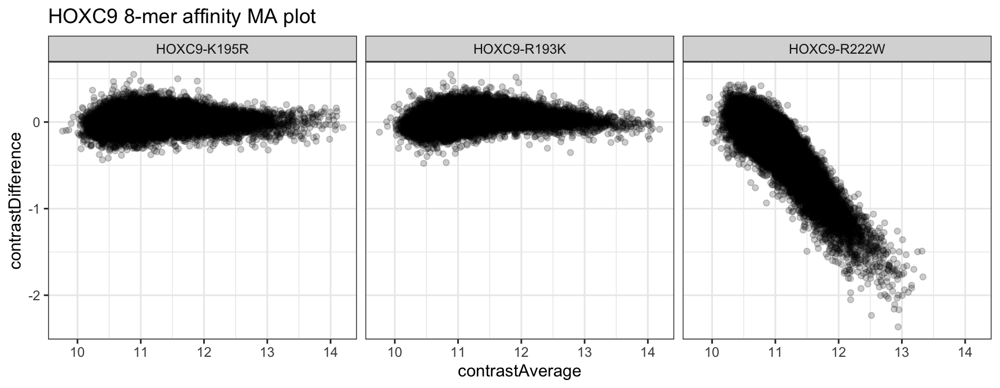

vignettes/analysis-summarization.Rmd
analysis-summarization.RmdFor an introduction to the upbm package, please see the quick start vignette (vignette("upbm-quickstart")). Here, we provide details on the summarization procedures implemented in the package for converting probe-level intensities to approximate 8-mer-level affinity estimates. In this vignette, we assume basic knowledge of the PBMExperiment class (see vignette("upbm-classes")). The same example HOXC9 dataset from the upbmData package is used in this vignette to illustrate the various functions.
To perform inference, the upbm pipeline aggregates normalized probe-level intensities to the 8-mer level across samples. These procedures require replicate data. When replicate samples are not available for conditions of interest, simple K-mer summary statistics can be computed using the upbm::summarizeKmers function. However, these simple summary statistics cannot be used with downstream inference procedures implemented in the package (see vignette("analysis-inference")) and should be treated as exploratory statistics.
suppressPackageStartupMessages(library("upbm"))Throughout, we will be using broom::tidy to tidy data stored in PBMExperiment and SummarizedExperiment objects for interactive analysis and plotting (see vignette("other-tidydata")). We load the dplyr package to help with interactive analysis.
suppressPackageStartupMessages(library("dplyr"))
suppressPackageStartupMessages(library("ggplot2"))For details on the example HOXC9 dataset, see the quick start vignette in this package or the upbmData package vignette. Here, we will use both Alexa488 and Cy3 scans.
Here, we again use just single PMT gain scan for the Alexa488 scans.
We also load the reference Cy3 dataset.
data(refcy3_8x60k_v1, package = "upbmAux")We will perform the earlier steps of pre-processing using the upbm::pmbPreprocess wrapper.
alexa_subset <- upbmPreprocess(pe = alexa_subset,
cy3pe = hoxc9cy3,
cy3refpe = refcy3_8x60k_v1,
verbose = FALSE)The first step of summarization is to aggregate across replicate samples in the dataset. This is performed using the upbm::probeFit function. Given a set of samples, the function returned cross-replicate estimate probe-level affinity summaries as well as variance and degrees of freedom estimates.
As described in the quick start vignette, we must specify the column in the colData of the PBMExperiment containing replicate information. In our example dataset, this information in stored in the "condition" column.
table(colData(alexa_subset)$condition)##
## HOXC9-K195R HOXC9-R193K HOXC9-R222W HOXC9-REF
## 2 2 3 3For each allelic variants, we only have 2 or 3 replicates. In PBM experiments, we often have access to only a few replicates of each condition. To obtain cross-replicate affinity and variance estimates, the upbm::probeFit internally calls limma, a popular package for the analysis of microarray data with features for handling analyses with low numbers of samples (Ritchie et al. 2015).
alexa_pfit <- probeFit(alexa_subset, stratify = "condition")
alexa_pfit## class: PBMExperiment
## dim: 41944 4
## metadata(0):
## assays(3): beta sd df
## rownames: NULL
## rowData names(4): Column Row probeID Sequence
## colnames(4): HOXC9-K195R HOXC9-R193K HOXC9-R222W HOXC9-REF
## colData names(0):
## probeCols(4): Column Row probeID Sequence
## probeFilter names(0):
## probeTrim: 1 36The returned PBMExperiment now only includes one column for each condition (HOXC9-K195R, HOXC9-R193K, HOXC0-R222W, HOXC9-REF). The cross-replicate summarized probe intensities are included in the beta assay.
## # A tibble: 167,776 x 7
## Column Row probeID Sequence cname beta sd
## <int> <int> <chr> <chr> <chr> <dbl> <dbl>
## 1 6 1 dBr_14334_J… GGTGTGAGTCCATTTCGTCAAACC… HOXC9-K… 11.6 0.482
## 2 7 1 dBr_06208_J… CAGTCTAAGTTTTCGGATTACCAT… HOXC9-K… 12.7 0.413
## 3 8 1 dBr_39317_J… CTTTTTAAAGACCTAGGAATCATT… HOXC9-K… 12.7 0.339
## 4 9 1 dBr_06987_J… CAGCTACGGAAGAGTAAAGGTTGT… HOXC9-K… 10.1 0.303
## 5 10 1 dBr_05074_J… GCTTCGAACGTGGGCGATGGAACA… HOXC9-K… 10.0 0.285
## 6 15 1 dBr_16182_J… CGCCCGTGGTAACAGTTACGAAAA… HOXC9-K… 12.7 0.485
## 7 23 1 dBr_20062_J… TTAGCCCGTTGTATGAGCAACTAT… HOXC9-K… 11.4 0.351
## 8 24 1 dBr_25542_J… TGCACAAGCGATCGAGCTCCTGTG… HOXC9-K… 10.5 0.369
## 9 26 1 dBr_40621_J… GGATGCCTCTTCTTTTCCGGGTCA… HOXC9-K… 10.7 0.434
## 10 27 1 dBr_21815_J… GTCAGAACCTCGCAAGTGGCACTT… HOXC9-K… 10.5 0.403
## # … with 167,766 more rowsWhile raw probe intensities ranged from 0 to 2^16, the cross-sample summaries are computed after log2 transforming intensities. As a result, the beta values are mostly bounded between 0 and 16. The log2 transformation is performed with a pseudocount of 1 added to probe intensities to prevent NAs for zero intensity probes. This can be changed by modifying the offset= parameter in the call.
We can plot the distribution of beta estimates across conditions.
ggplot(pfit_dat, aes(x = beta, color = cname)) +
geom_density() +
scale_color_brewer("condition", palette = "Set1") +
theme_bw() +
ggtitle("HOXC9 cross-replicate summarized probe intensities")
We see that most alleles have similar distributions with the exception of the R222W variant.
Next, we take the cross-replicate aggregated probe intensities and further aggregate them to the 8-mer level using the upbm::kmerFit function. The function takes the output from upbm::probeFit above along with a list of k-mers, usually all 8-mers, as the primary input. Mathematically, this is accomplished by framing the analysis as a meta-analysis across probes for each K-mer. K-mer-level estimates are computed by pooling the probe-level estimates for all probes containing the K-mer using the two-step DerSimonian and Laird estimator (DerSimonian and Kacker 2007). Additional steps are also performed to adjust for position bias of K-mers along the probe sequence and to filter out outlier probes from each K-mer probe set. More details on this procedure can be found in the forthcoming manuscript describing the method.
To generate the full set of 8-mers, the package includes a helper function, upbm::uniqueKmers. The function can be used to generate the complete set of K-mers of a specified length, unique to reverse complementation. We demonstrate this function by returning all unique 3-mers.
uniqueKmers(3)## [1] "AAA" "AAC" "AAG" "AAT" "ACA" "ACC" "ACG" "ACT" "AGA" "AGC" "AGG"
## [12] "ATA" "ATC" "ATG" "CAA" "CAC" "CAG" "CCA" "CCC" "CCG" "CGA" "CGC"
## [23] "CTA" "CTC" "GAA" "GAC" "GCA" "GCC" "GGA" "GTA" "TAA" "TCA"As stated in the quick start, the function additionally computes statistics needed for downstream differential testing. More specifically, unless contrasts = FALSE is specified, the covariance between the baseline condition (column) and all other conditions is estimated during this step.
By default, if a single column is found containing the REF suffix, this will be used as the baseline condition. If no column includes the REF suffix or a different condition should be used as the baseline condition for computing contrasts, this should be specified to the baseline= parameter. In this analysis, we use the standard HOXC9-REF (wild type) allele as our baseline condition.
alexa_kfit <- kmerFit(alexa_pfit, kmers = uniqueKmers(8L),
baseline = "HOXC9-REF")
alexa_kfit## class: SummarizedExperiment
## dim: 32896 4
## metadata(1): baseline
## assays(5): affinityEstimate affinityVariance contrastDifference
## contrastAverage contrastVariance
## rownames: NULL
## rowData names(1): seq
## colnames(4): HOXC9-K195R HOXC9-R193K HOXC9-R222W HOXC9-REF
## colData names(0):The returned PBMExperiment includes the same number of columns corresponding to the four conditions. The number of rows is equal to the number of K-mers specified to kmers= above.
length(uniqueKmers(8L))## [1] 32896For each condition, an 8-mer affinityEstimate and affinityVariance is computed. For all conditions other than the baseline, contrastDifference (baseline - condition), contrastAverage ((baseline + condition)/2) and contrastVariance (var(baseline - condition)) values are also computed.
kfit_dat <- broom::tidy(alexa_kfit, c("affinityEstimate", "affinityVariance",
"contrastDifference", "contrastAverage",
"contrastVariance"))
kfit_dat## # A tibble: 131,584 x 7
## seq cname affinityEstimate affinityVariance contrastDiffere…
## <chr> <chr> <dbl> <dbl> <dbl>
## 1 AAAA… HOXC… 11.8 0.0146 0.201
## 2 AAAA… HOXC… 11.7 0.0156 0.111
## 3 AAAA… HOXC… 11.5 0.0237 0.140
## 4 AAAA… HOXC… 12.1 0.0225 0.275
## 5 AAAA… HOXC… 11.7 0.0367 0.108
## 6 AAAA… HOXC… 11.5 0.0222 0.0517
## 7 AAAA… HOXC… 11.8 0.0239 0.00936
## 8 AAAA… HOXC… 11.4 0.0179 0.173
## 9 AAAA… HOXC… 11.7 0.0308 0.0942
## 10 AAAA… HOXC… 11.3 0.0234 0.0948
## # … with 131,574 more rows, and 2 more variables: contrastAverage <dbl>,
## # contrastVariance <dbl>All the values of the contrast columns are NA for the HOXC9-REF condition.
kfit_dat %>%
dplyr::select(cname, starts_with("contrast")) %>%
dplyr::group_by(cname) %>%
dplyr::summarize_if(is.numeric, ~mean(is.na(.)))## # A tibble: 4 x 4
## cname contrastDifference contrastAverage contrastVariance
## <chr> <dbl> <dbl> <dbl>
## 1 HOXC9-K195R 0 0 0
## 2 HOXC9-R193K 0 0 0
## 3 HOXC9-R222W 0 0 0
## 4 HOXC9-REF 1 1 1We can plot the 8-mer affinity distributions across conditions.
ggplot(kfit_dat, aes(x = affinityEstimate, color = cname)) +
geom_density() +
scale_color_brewer("condition", palette = "Set1") +
theme_bw() +
ggtitle("HOXC9 cross-replicate summarized 8-mer affinities")
Again, affinities appear similar for all alleles with the exception of the R222W variant.
We can also create MA plots using the contrastDifference and contrastAverage columns to compare each allelic variant against the baseline wild type condition. When generating this plot, we need to remember to filter out the NAs corresponding to the baseline condition’s values in the table.
kfit_dat %>%
dplyr::filter(!is.na(contrastDifference)) %>%
ggplot(aes(x = contrastAverage, y = contrastDifference)) +
geom_point(alpha = 1/5) +
facet_grid(. ~ cname) +
theme_bw() +
ggtitle("HOXC9 8-mer affinity MA plot")
DerSimonian, Rebecca, and Raghu Kacker. 2007. “Random-Effects Model for Meta-Analysis of Clinical Trials: An Update.” Contemporary Clinical Trials 28 (2): 105–14.
Ritchie, Matthew E, Belinda Phipson, Di Wu, Yifang Hu, Charity W Law, Wei Shi, and Gordon K Smyth. 2015. “Limma Powers Differential Expression Analyses for Rna-Sequencing and Microarray Studies.” Nucleic Acids Research 43 (7): e47–e47.